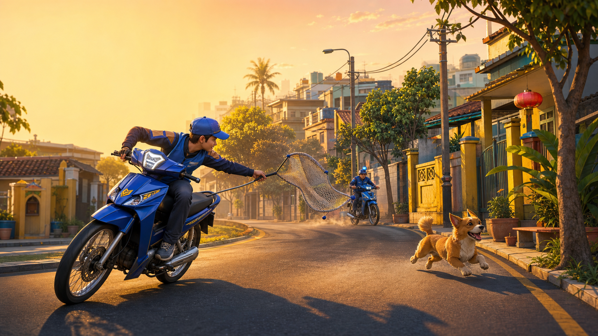

Common
Street Dog
10 points
Steady, familiar, and a dependable way to keep the run alive.
A neighborhood score chase
Drive, lock on, and throw the net. Rare dogs are worth more—but they will not wait around.

The game loop
Scan the streets and line up a target while keeping the car moving.
Close the distance until the target is locked, then commit to the chase.
Throw the net at the right moment to bank points and find the next dog.
Grab fuel, avoid guards, and reach 100 points before the three-minute session ends.
Dog tiers
Each capture changes the score. Decide whether to take the common catch now or risk the clock for a better payout.
Common
10 points
Steady, familiar, and a dependable way to keep the run alive.
Uncommon
25 points
Quick enough to demand a clean line and a timely net.
Rare
40 points
A big score that pushes the pace of the neighborhood chase.
Very rare
50 points
The fastest tier and the biggest single pickup on the streets.
Controls
A few keys, a moving target, and no time to waste.
Platform status
Catch Dog has CI export configuration for Windows x86_64 and macOS Universal 2, including Intel Macs with AMD GPUs. Physical smoke tests, performance checks, signing, and notarization remain release gates.